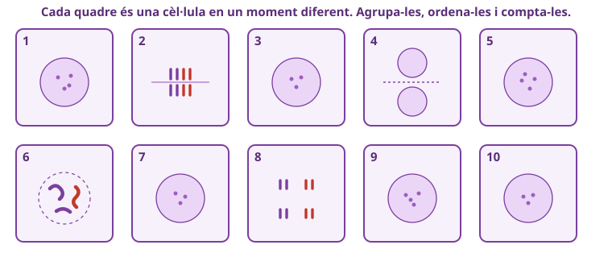
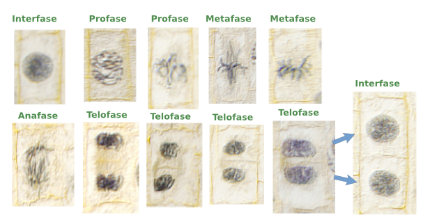

✎ Clica per editar · Ctrl+B negreta · × rosa elimina · Ctrl+Z desfés
✕
🔬
SA2 · La cèl·lula · Sessió 1 de 4
Una cèl·lula que no s'atura
El cicle cel·lular, la mitosi i el càncer
Biologia i Geologia · 4t ESO IE Temple
✕
Laboratori i treball autònom⏱️ 2h total
Nom:
Data:
A
✕
🎯 Objectius d'aprenentatge d'avui
Identifico les fases de la mitosi en una preparació real i argumento l'ordre a partir del que observo, no de memòria.
Explico per què una cèl·lula ha de dividir-se en dues filles idèntiques i què significa perdre el control.
Estimo quina fase dura més a partir de la proporció de cèl·lules i justifico el raonament.
Relaciono la divisió sense control amb el càncer i argumento per què és perillós.
✕
0
Idees prèvies ⏱️ 10 min
No es corregeix: ho compararem al final
✏️ 1. D'on surten les cèl·lules noves del teu cos? Quan et fas una ferida i es cura, què ha passat exactament?
✏️ 2. Amb el que saps ara, què creus que li passa a una cèl·lula perquè sigui cancerosa?
✕
1
Laboratori: observa i ordena les fases ⏱️ 40 min
Ets un laboratori d'anàlisi: dedueix l'ordre pel que veus
Mira els deu quadres de la Fig.2 (o el microscopi). Cada cèl·lula està en un moment diferent de la divisió, sense nom. Agrupa-les segons com es veu l'ADN, posa-les en ordre i compta quantes n'hi ha de cada tipus. El nom de cada fase el posaràs a la Secció 2.
✕

Fig.2 · Deu cèl·lules esquematitzades en moments diferents de la divisió (sense nom).
Ordre
El teu grup (quadres núm.)
Com es veu l'ADN? (dibuixa o descriu)
Quantes?
1
2
3
4
5
🗣️ Demostració a l'aula: defensa en veu alta el teu ordre i el recompte davant d'una altra parella. Estan d'acord? On diferíeu?
✕
🚀
Repte
Sense mirar encara la solució (Fig.1): ordena tu els deu quadres només pel que veus. Quina pista visual fa MÉS fàcil distingir la cèl·lula amb l'ADN alineat al centre de la que el té separant-se cap als dos costats? Escriu-la com si l'expliquessis a un company que s'hi encalla.
✕
2
El cicle i les 4 fases ⏱️ 25 min
Comprova el teu ordre amb la Fig.1
✕
Fig.1 · El cicle de la mitosi, fase a fase (la solució de la Secció 1).
✕

Fig.3 · Les mateixes fases, en cèl·lules reals: així es veuen al microscopi.
Completa què passa a cada fase i marca on està la interfase (recorda: no és part de la mitosi).
Fase
Què hi passa?
Interfase
Profase
Metafase
Anafase
Telofase
✕
🚀
Repte
Per què és imprescindible que l'ADN es copiï sencer a la interfase, ABANS de repartir-lo? Què passaria si una cèl·lula començés a dividir-se amb l'ADN copiat només a mitges?
✕
3
Per què dividir-se? I quan es perd el control ⏱️ 25 min
De la ferida que es cura al tumor que no s'atura
✏️ Escriu dos motius pels quals el cos necessita dividir cèl·lules, amb un exemple de cada:
✏️ Què diferencia una divisió normal d'una tumoral?
✕
🚀
Repte
Una cèl·lula sana rep senyals de «para de dividir-te» quan ja n'hi ha prou; una tumoral els ignora. Explica, com si fossis el metge que llegeix la biòpsia, per què això fa que un tumor «creixi sense control».
✕
🔬
Com es mesura al laboratori
En una preparació veus una foto congelada: com més cèl·lules trobis en una fase, més temps dura. Comptar les cèl·lules en divisió respecte al total és l'índex mitòtic, i és el que fan servir per estudiar un tumor.
✕
4
Quina fase dura més? + torna a la biòpsia ⏱️ 20 min
Aplica el que has après al cas del principi
✏️ A partir del teu recompte, quina fase dura MÉS? Per què?
✕
🚀
Repte
Un investigador troba una mostra amb MOLTES cèl·lules en divisió i molt poques en interfase, comparada amb un teixit sa. Què li fa sospitar això? Connecta-ho amb l'índex mitòtic i el càncer.
🔬 Torna a la biòpsia: «s'observen cèl·lules que es divideixen sense control». Amb tot el que has après avui, explica en 4-5 línies què els està passant a aquelles cèl·lules i per què és perillós.
✕
🧠 Metacognició — 3 min
✕
🎯 Torna als objectius — marca el que has après avui:
Sé anomenar i ordenar les fases de la mitosi mirant les cèl·lules.
Explico per què el cos divideix cèl·lules (reparar i créixer).
Sé dir quina fase dura més comptant cèl·lules.
Explico què li passa a una cèl·lula «sense control» (càncer).
✕
❓
Encara em pregunto…
✕
⭐
Puntuació de la sessió
★★★★★
Encercla les estrelles
✕
📚 Feina per a casa — per a la Sessió 2
✕
1
🧬 Dos teixits: busca un teixit del cos que es regeneri molt de pressa (pell, intestí, sang…) i un que gairebé no es regeneri (les neurones del cervell). Anota per què creus que un fa molta mitosi i l'altre gairebé no.
✕
2
🗣️ Prepara-ho per posar-ho en comú: a la propera sessió compararem mitosi i meiosi. La teva explicació dels dos teixits és la teva demostració de comprensió a l'aula.
Adaptat per Albert Pahissa de l'original de Jordi Domènech. Llicència CC BY-NC-SA 4.0 (Reconeixement–NoComercial–CompartirIgual).